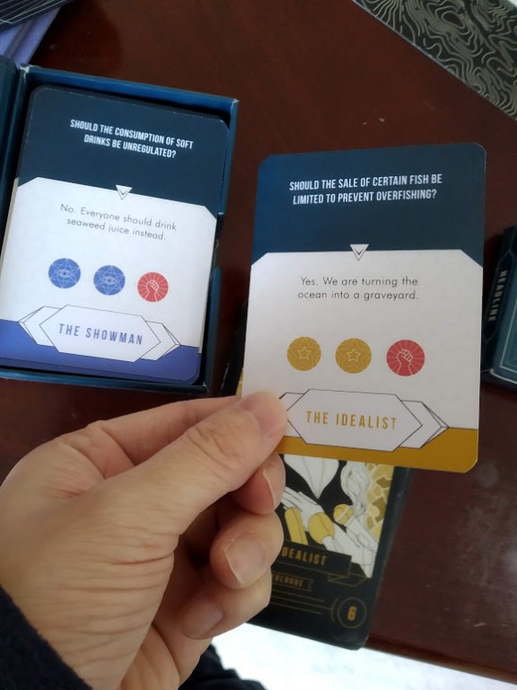
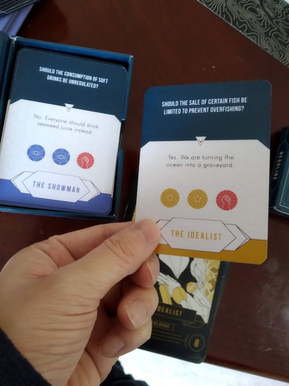

Hey everyone. Today, I am here with a Rulebook Review of Shasn. This review will be split into two sections: First, I will talk about the rulebook quality. In the second section, I will talk a bit about the gameplay and theme. Please keep in mind that the first portion of this review is concerned with the quality of the rulebook and not the gameplay. A great game can still receive a low rulebook score, and a poor game can receive an excellent rulebook score. I was sent a prototype copy of Shasn from Memesyslabs, but am otherwise not compensated for this review.
Organization – 5/5
How easy is it to look up a rule? Can you easily find the section you are looking for? Is the rulebook organized in a logical order so that everything makes sense during the first read-through?
I found that it was extremely easy to look up a rule during gameplay. The rulebook is beautifully graphically designed, and a lot of thought was put into economizing space. I found that the rulebook writers did a fantastic job of not cramming in too much information into a small space, which helps a lot when flipping through to find a particular section. Not to mention the table of contents, which is another way to quickly find a section.
This game is big. The box is gigantic and is packed with player boards, tokens, and multiple decks of cards. Going into the game, I had no idea how to play and expected to spend a long time working through the rules. That was not the case at all, thanks to a thoughtfully organized rulebook:
I love the way this rulebook walks you through the setup, and lets you get the game right in front of you before you read through the rest of the rules. They dedicate a full 2 pages to this section rather than try and cram more content in the rules, which I found very helpful. Right after that, the rulebook gives you a clear and intuitive order of sections that made the first read-through extremely easy. I rarely had to refer between sections and found that I was able to have a very good idea of the game without much time investment spent reading the rules. The game also comes with a second booklet that goes over the effects of conspiracy and headline cards in more detail. I found this booklet invaluable, as it helped clarify any rule issues and edge cases while playing.
Shasn has one of the most well-organized rulebooks I have seen, and the game has not even been released yet. I was very impressed, and decided to give it a full score for organization.
Clarity – 5/7
How easy is it to understand the rules? Is the rulebook needlessly complex or not detailed enough? Could the rules be interpreted in multiple valid ways? Were there plenty of examples and images?
Before talking about clarity, I thought I’d talk a bit more about Shasn. It was designed in India, which I was actually very surprised by, as I could hardly tell that the rulebook or cards were translated. In fact, many of the US campaign cards directly reference US politics and were clearly extremely well researched. I did not reduce my standards for the rulebook based on this knowledge, but I think it is important to point out that Shasn was not created in the US, In my mind, this makes the high clarity score and in-depth knowledge of US politics all the more impressive.
The rules were very easy to understand, and used concepts that will feel very familiar to most. For example, this section on Gerrymandering:
In this case, I think that the theme helped make Shasn extremely intuitive to understand. In this example, it is intuitive that once you “control” a district, you have the power to Gerrymander and redraw the district lines. In the game, this is represented by moving around voters from district to district.
That being said, I found that the rulebook leaned towards not being detailed enough. There were a couple of times where I had thought of an edge-case scenario that was not explained fully in the rules (such as the order of headline cards resolving in cases of multiple headline cards). In general, the rules were pretty good about not being interpreted in multiple different ways, though there were a few times where it could have been clearer. One such example would be specifying which effects allow you to take combinations of resources, and which ones only allow you to take one kind of resource only. This did not have a large effect on gameplay, and most of the time I guessed the rules correctly, but it is something that you will want to be aware of.
There were abundant images and diagrams, which I absolutely loved to see. There weren’t many “examples of play,” but I didn’t really miss them that much as the rulebook does a great job of explaining the rules as is.
Teaching the Game – 3/3
Does the rulebook help returning players to quickly relearn the game and explain it to others? Is it easy to determine any changes to the game based on player count? What about player aids?
The back of the rulebook contains a description of each Ideologue Card, which is extremely easy to access as a returning player. The clear set-up diagram makes this game very easy to set up. Beyond the rulebook, the game comes with a board where the places for putting your decks of cards are labeled very clearly. This is a great aid for returning and new players. The game doesn’t change much based on player count (in fact, my understanding is that it is strictly a 4 player game unless they hit certain stretch goals in their Kickstarter). Finally, players are given a board that doubles as a player aid, and clearly marks things such as the resource cap, and another overview of the different Ideologue powers. If that weren’t enough, some of the boxes that you keep the components in have rule reminders, and the game comes with 4 large-size cards that further explain the Ideologue cards.
Overall – 13/15
A score of 0-6 would be an unintelligible rulebook. A score of 7-9 is a rulebook that is mediocre and likely requires further research to learn all the rules, such as watching a how to play video. A score of 10-12 is a rulebook sufficient to stand on its own legs. A score of 13-15 is an excellent rulebook that has next to no issues and has admirable qualities that go above and beyond that add to the game, theme, or overall experience.
I am confident in giving Shasn a 13/15, as it is truly an excellent rulebook that is as beautiful as it is helpful and informative. It is absolutely clear that the rulebook was not simply an afterthought. It becomes even more impressive when you consider the fact that the rulebook isn’t necessarily finalized as of yet, and the fact that the game is designed in India.
Part Two: Gameplay
I normally don’t talk about gameplay in my Rulebook Reviews, but I thought that I would talk a bit about Shasn because of how smart the game design is at integrating the political theme. “Shasn is truly a great game that you are sure to enjoy. But Shasn is more than just a great game. In a world where politics drives us apart, Shasn is able to bring people together to discuss real and pressing issues, and have fun while doing it!”
"Shasn is truly a great game that you are sure to enjoy. But Shasn is more than just a great game. In a world where politics drives us apart, Shasn is able to bring people together to discuss real and pressing issues, and have fun while doing it! Out of the many attempts I’ve seen to pull off a political theme of this kind, Shasn is by far the most promising.”
Jorge ZhangSo, what makes Shasn so great? Well, it’s the simple genius behind the double-sided Idealogy Cards.
 

Each card has a question that you answer “Yes” or “No” to. Depending on your answer, you get different resources. The rules say that you are not allowed to know which side or choice results in what resource. This means that you are supposed to make these political choices based on what your character actually believes thinks the voters will like. At first, I thought this may be a strange design choice given that someone who has played several times would have an advantage. Then I realized that the sheer number of ideologue cards actually lends the advantage to those who are well-versed in politics, which I find fascinating. After all, knowing how the people will respond is pretty key to being a politician, right?
Furthermore, the ideologue cards create a space where people can seriously discuss the issues without getting angry or upset at each-other. The first thing that the game does is eschew the Republican, Democrat, Libertarian, etc. parties. I especially welcome this choice due to the nature of politics being increasingly about what side you are on (instead, the 4 different ideologies in-game are made up, but do share some resemblances to real-world political parties). Secondly, the game encourages you to often times do the opposite of what you believe to collect the resources you need at the moment. This is due to the voter cards, which allow you to gain voters by spending different combinations of resources. Depending on the game state, it might make sense to establish a different stance on one particular issue to gain the right resources! This is incredibly thematic, and to me, represents the ways a politician might make concessions in order to try and win a particular important district.
There is a lot more to the gameplay that I could go on about, but I hope that gave you a small taste of what you might expect from Shasn: an interactive game that rewards political savviness and negotiation. My only caveats: the game can sometimes feel repetitive after a few plays. This definitely feels like a game that could use expansions of some kind. Also, the player who knew the most about politics ended up winning. In that sense, there is a bit of a “trivia” element to the game which your group may or may not enjoy.
You can check out Shasn on Kickstarter now: https://buyshasn.com/2XNI8iO. I highly recommend the game, and encourage you to check it out. What kind of politician would you be? Let me know in the comments below, and thank you for reading!